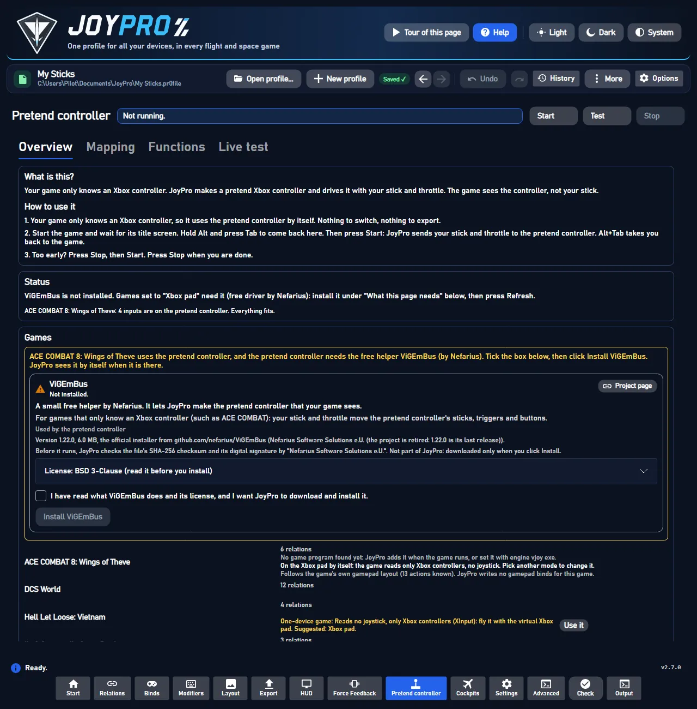

Is sraith aerchomhraic stuara í ACE COMBAT, agus ní fhéadfadh a dhá chluiche reatha ar PC a bheith níos difriúla do HOTAS. Ní léann ACE COMBAT 8 aon mhaide eitilte, ach rialaitheoir Xbox amháin. Déanann JoyPro rialaitheoir bréige (pad Xbox fíorúil) de do mhaide, do sconna agus do phedail, agus ní scríobhann sé aon rud sa chluiche. Léann ACE COMBAT 7 do mhaidí é féin agus coinníonn sé a gceangail i gcomhad téacs, Input.ini: léann agus scríobhann JoyPro é mar aon chluiche eile. Níl ach doiciméadú ar ACE COMBAT Zero agus Assault Horizon.
ACE COMBAT 7: Skies Unknown dúchasach (a chomhaid cheangail féin)
- Tacaíocht
- dúchasach (a chomhaid cheangail féin)
- Ordú an innill
engine ac7- Comhad ceangail
%LOCALAPPDATA%\BANDAI NAMCO Entertainment\ACE COMBAT 7\Config\Input.ini(ini, rannóg amháin in aghaidh an mhúnla feiste)- Ionchuir a léann an cluiche
- léann sé 32 cnaipe, 8 n-ais, 4 hata (4 threo) in aghaidh an joystick (doiciméadaithe)
- Liosta orduithe ó
- an
Input.inia scríobhann an cluiche (tosaigh an cluiche uair amháin) - Tástáil sa chluiche
- 19/19 céim curtha i gcrích (2026-10-12)
- ✓ Iompórtáil
- ✓ Easpórtáil
- ✗ Ceangail mhéarchláir
- ✗ Mionathraitheoirí
- ✓ Liosta orduithe tógtha ar do PC
- ✓ Faire cluichí
- ✗ Cuair aise agus criosanna marbhaACE COMBAT 7: inbhéartú amháin (
:R). - ✗ Socruithe rialaithe an chluiche
- ✗ Socruithe aiseolais fórsa sa chluiche
- ✗ Aiseolas fórsa ó telemetry
- ✗ Taifeadadh telemetry
- ✓ Joystick fíorúil (vJoy)
- ◐ Pad Xbox fíorúil
- ✓ Feidhmeanna fíorúla
- ◐ Draoi socraithe / Sann go hUathoibríoch
- ✗ Cabáin
- ✓ Bileoga tagartha
- ✓ Tástáil sa chluiche
ACE COMBAT 8: Wings of Theve pad Xbox fíorúil
- Tacaíocht
- pad Xbox fíorúil
- Ordú an innill
engine ac8- Comhad ceangail
...\ACE COMBAT 8\Saved\SaveGames\System.sav(GVAS le seiceáilsuim): léamh amháin- Ionchuir a léann an cluiche
- ní léann sé aon joystick, ach paid Xbox amháin
- Liosta orduithe ó
- eochracha an phaid in
System.sav+ tábla maidí JoyPro féin - Tástáil sa chluiche
- 20/20 céim curtha i gcrích (2026-10-11)
- ◐ IompórtáilACE COMBAT 8: ní léitear ach na heochracha paid a socraíodh sa chluiche (ní stórálann sé aon cheangail joystick).
- ◐ EaspórtáilACE COMBAT 8: ní scríobhann JoyPro aon rud (socruithe le seiceáilsuim); sroicheann do cheangail an cluiche tríd an bpad Xbox fíorúil.
- — Ceangail mhéarchláirACE COMBAT 8: ní scríobhtar aon rud.
- — MionathraitheoiríACE COMBAT 8: ní scríobhtar aon rud.
- ✓ Liosta orduithe tógtha ar do PC
- — Faire cluichíACE COMBAT 8: ní scríobhtar aon rud, mar sin níl aon rud le faire.
- ✓ Cuair aise agus criosanna marbha
- ✗ Socruithe rialaithe an chluiche
- ✗ Socruithe aiseolais fórsa sa chluiche
- ✗ Aiseolas fórsa ó telemetry
- ✗ Taifeadadh telemetry
- — Joystick fíorúil (vJoy)
- ✓ Pad Xbox fíorúil
- ✓ Feidhmeanna fíorúla
- ◐ Draoi socraithe / Sann go hUathoibríoch
- ✗ Cabáin
- ✓ Bileoga tagartha
- ✓ Tástáil sa chluiche
ACE COMBAT Zero (le ACE COMBAT 8) doiciméadú amháin
- Tacaíocht
- doiciméadú amháin
- Ordú an innill
- ceann ar bith
- — Iompórtáil
- — Easpórtáil
- — Ceangail mhéarchláir
- — Mionathraitheoirí
- — Liosta orduithe tógtha ar do PC
- — Faire cluichí
- — Cuair aise agus criosanna marbha
- — Socruithe rialaithe an chluiche
- — Socruithe aiseolais fórsa sa chluiche
- — Aiseolas fórsa ó telemetry
- — Taifeadadh telemetry
- — Joystick fíorúil (vJoy)
- — Pad Xbox fíorúilBain triail as pad Xbox fíorúil ACE COMBAT 8.
- — Feidhmeanna fíorúla
- — Draoi socraithe / Sann go hUathoibríoch
- — Cabáin
- — Bileoga tagartha
- — Tástáil sa chluiche
ACE COMBAT Assault Horizon Enhanced Edition doiciméadú amháin
- Tacaíocht
- doiciméadú amháin
- Ordú an innill
- ceann ar bith
- — Iompórtáil
- — Easpórtáil
- — Ceangail mhéarchláir
- — Mionathraitheoirí
- — Liosta orduithe tógtha ar do PC
- — Faire cluichí
- — Cuair aise agus criosanna marbha
- — Socruithe rialaithe an chluiche
- — Socruithe aiseolais fórsa sa chluiche
- — Aiseolas fórsa ó telemetry
- — Taifeadadh telemetry
- — Joystick fíorúil (vJoy)
- — Pad Xbox fíorúilMolta: an pad Xbox fíorúil.
- — Feidhmeanna fíorúla
- — Draoi socraithe / Sann go hUathoibríoch
- — Cabáin
- — Bileoga tagartha
- — Tástáil sa chluiche
Ón maitrís tacaíochta, ginte ó chód an innill: gach cluiche.
#Cuir ag obair é i 3 chéim
#ACE COMBAT 8
- Socraigh gach rud dom
ansin Úsáid na cnaipí seo - Socraigh an rialaitheoir bréige
ansin Tástáil - Tosaigh an cluiche
ag a scáileán teidil: Alt+Tab, Tosaigh
#ACE COMBAT 7
- Tosaigh an cluiche uair amháin
ansin dún é - Socraigh gach rud dom
ansin Úsáid na cnaipí seo - Scríobh i mo chluiche
coinnigh an cluiche dúnta
#ACE COMBAT 8: socraigh é uair amháin
- Ar an leathanach Tús, brúigh Socraigh gach rud dom. Nó roghnaigh an freagra fáilte Imir ACE COMBAT le mo mhaide eitilte: taispeánann turas gearr gach céim duit ansin.
- Féach ar an liosta de cad a théann cén áit. Brúigh Úsáid na cnaipí seo.
- Brúigh Socraigh an rialaitheoir bréige. Dúntar an fhuinneog socraithe. Osclaítear an leathanach Joystick Fíorúil.
- Tá cúntóir saor in aisce darb ainm ViGEmBus de dhíth ar an rialaitheoir bréige. Ticeáil an bosca faoina cheadúnas. Ansin brúigh Suiteáil ViGEmBus. Iarrann Windows cead: cliceáil Tá. Ní dhéanann tú é seo ach uair amháin.
- Brúigh Tástáil. Bog do mhaide. Bogann pictiúr an rialaitheora leis. Brúigh cnaipe: lasann sé.



Ní gá duit aon rud a athrú. Úsáideann ACE COMBAT 8 an rialaitheoir bréige uaidh féin. Deir an leathanach "Ar an pad Xbox uaidh féin: ní léann an cluiche ach rialaitheoirí Xbox". Níl HidHide de dhíth don chluiche seo: ní fheiceann sé do mhaidí fíora riamh ar aon nós.
#ACE COMBAT 8: gach uair a imríonn tú
- Tosaigh ACE COMBAT 8. Fan go dtaispeánann sé a scáileán teidil.
- Coinnigh Alt síos agus brúigh Tab. Tá tú ar ais in JoyPro.
- Brúigh Tosaigh.
- Brúigh Alt+Tab arís. Tá tú ar ais sa chluiche. Eitil!
- Nuair a bheidh tú réidh, brúigh Stop.
Ná brúigh Tosaigh ach nuair a thaispeánann an cluiche a scáileán teidil. Ró-luath? Deir JoyPro "Ró-luath". Brúigh Stop, ansin Tosaigh. Déan é seo gach uair a imríonn tú.
#Cad a théann cén áit in ACE COMBAT 8
| Ar do HOTAS | Ar an rialaitheoir bréige | Sa chluiche |
|---|---|---|
| Maide ar aghaidh, siar, ar clé, ar dheis | Maide clé | Claonadh agus rolladh |
| Luamhán sconna | Ar aghaidh: RT. Siar: LT. | Méadaigh agus laghdaigh an luas |
| Casadh an mhaide (nó na pedail) | LB agus RB, ó thart ar 30 % | Luascadh ar clé agus ar dheis |
| Hata saor ar do mhaide | Maide deas | Féach thart |
| Do chnaipe bladhmanna | L3 agus R3 le chéile | Bladhmanna (gan deimhniú sa chluiche) |
| Do lasc cumarsáide nó do hata roghchláir AI | D-pad | Orduithe don chomrádaí sciatháin |
| Gaol cnaipe darb ainm "High-G" | An dá thruicear go hiomlán | Casadh High-G |
Deir an cluaisín Tástáil bheo ar an leathanach Joystick Fíorúil cad a dhéanann gach cnaipe, mar shampla "A: Scaoil an meaisínghunna".
Brúnn JoyPro L3 agus R3 le chéile do bhladhmanna. Níor dheimhnigh aon duine é seo sa chluiche fós. Deir JoyPro é sin freisin.
#Féach thart le hata
Féachann an cluiche thart le maide deas an rialaitheora bréige. Cuireann JoyPro é ar hata saor ar do mhaide. Coinnigh treo hata síos, agus casann an radharc an treo sin. Is minic gurb é an hata uachtair ar do mhaide é. Coinníonn an hata a jab i do chluichí eile, mar shampla trim in DCS. Féach Rianú cinn agus féachaint thart.
#ACE COMBAT 7: an bealach tapa
- Tosaigh ACE COMBAT 7 uair amháin agus do chuid feistí go léir ceangailte, ansin scoir. Scríobhann an cluiche
Input.ininuair a dhúntar é. - Ar an leathanach Tús, brúigh Socraigh gach rud dom. Féach ar an liosta. Brúigh Úsáid na cnaipí seo.
- Dún an cluiche. Brúigh Scríobh i mo chluiche. Coinníonn JoyPro cóip den seanchomhad.
Ar cheangail tú cnaipí in ACE COMBAT 7 roimhe seo? Tairgeann an leathanach Tús Iompórtáil, ansin líon na bearnaí ansin. Fanann do cheangail, agus ní fhaigheann ach cnaipí saora jabanna nua.
#ACE COMBAT 7: iompórtáil do cheangail féin
- Tosaigh ACE COMBAT 7 uair amháin agus do chuid feistí go léir ceangailte, ansin scoir.
- Oscail Tús. Sula mbíonn an comhad sin ann, úsáideann JoyPro a liosta féin de na 20 gníomh eitilte. Tógann Nuashonraigh ar an gcárta an liosta ó do chomhad.
- Brúigh Iompórtáil ar chárta ACE COMBAT 7, coinnigh Cuir le mo phróifíl (molta), brúigh Iompórtáil anois.


#Tóg agus seiceáil gaolta
Is féidir le gaol amháin gníomh ACE COMBAT 7 agus gníomh ACE COMBAT 8 den fheidhm chéanna a choinneáil. Ansin faigheann an dá chluiche é ó chnaipe amháin (sreabhadh na ngaolta). Aimsíonn an tseiceáil cnaipe amháin a dhéanann dhá rud in ACE COMBAT 7. Brúigh Seiceáil sa bharra íochtair, nó Seiceáil anois ar an leathanach Easpórtáil (an tseiceáil).
#Easpórtáil
- ACE COMBAT 7: dún an cluiche, oscail Easpórtáil, coinnigh Ionadaigh ar mo fheistí le Glan mo fheistí eile freisin, brúigh Easpórtáil anois ar a chárta.
- ACE COMBAT 8: ní scríobhann easpórtáil aon rud agus deir sí é sin. Sroicheann do cheangail an cluiche tríd an rialaitheoir bréige fad atá Tosaigh ar siúl.


Feiceann ACE COMBAT 8 rialaitheoir Xbox amháin: taispeánann na roghchláir cnaipí pad, agus liostaíonn SYSTEM > CONTROLS > CONTROLLER > BUTTON MAPPING na naoi ngníomh is féidir a athmhapáil (luascadh ar clé agus ar dheis, luasghéarú, moilliú, an meaisínghunna a scaoileadh, diúracán a scaoileadh, arm a athrú, sprioc a athrú, léarscáil radair) lena gcnaipí pad. Bogann do mhaide fócas an roghchláir cosúil le maide clé an phad.
Níl aon roghchlár ag ACE COMBAT 7 chun ceangail mhaide eitilte a athmhapáil: léann sé iad ó Input.ini. Níl sé deimhnithe fós an dtaispeánann a roghchlár rialuithe iad. Dheimhnigh tástáil JoyPro sa chluiche go gcoinníonn an cluiche gach luach a scríobh JoyPro nuair a athscríobhann sé an comhad ag scor dó.
#An méid a dhéanann tú féin
- ACE COMBAT 8: brúigh Tosaigh ag an scáileán teidil, gach uair a imríonn tú (féach thuas).
- ACE COMBAT 8: tar éis duit cnaipe pad a athrú in BUTTON MAPPING, brúigh Nuashonraigh ar chárta an chluiche. Ansin brúigh Nuashonraigh mapáil ar an leathanach Joystick Fíorúil. Leanann JoyPro do chnaipí nua ansin.
- ACE COMBAT 7: tosaigh an cluiche uair amháin le gach feiste ceangailte. Fágtar feiste gan rannán sa chomhad ar lár le "tosaigh an cluiche uair amháin agus an fheiste seo ceangailte". Múch Steam Input don chluiche.
#Gaistí coitianta
- Ní fhreagraíonn ACE COMBAT 8: ar brúdh Tosaigh ró-luath? Brúigh Stop, ansin Tosaigh ag an scáileán teidil.
- ACE COMBAT 8: téann an tsrón an bealach mícheart: ar shocraigh tú "Pitch Controls: Inverted" sa chluiche? Féach Casta.
- ACE COMBAT 8: gan ViGEmBus: gan é, ní féidir leis an gcluiche do mhaide a fheiceáil. Suiteáil é ar an leathanach Joystick Fíorúil.
- ACE COMBAT 7: fanann ais ag an leath: déanann an cluiche meán de ghníomh amháin thar gach feiste. Tugann sconna ag 100 % agus an gníomh céanna ar shleamhnán ag -100 % 50 %. Ceangail gach gníomh aise ar aon fheiste amháin (glanann Nuashonraigh, buaileann mo phróifíl é ar na cinn eile).
- ACE COMBAT 7: dhá mhaide den tsamhail chéanna – roinneann siad rannán amháin; ní féidir leis an gcluiche iad a aithint óna chéile.
Tuilleadh: Imir cluiche Xbox amháin le HOTAS.
#Conas a oibríonn an rialaitheoir bréige
flowchart LR R["Maide, sconna,<br/>pedail"] --> J["JoyPro<br/>(an rialaitheoir bréige)"] S["Do chnaipí pad<br/>sa chluiche"] --> J J --> G["Feiceann ACE COMBAT 8<br/>rialaitheoir Xbox"]
- Gan HidHide. Ní léann ACE COMBAT 8 ach rialaitheoirí Xbox, mar sin ní fheiceann sé do mhaidí fíora riamh. Ní gá aon rud a fholú, agus ní iarrann Windows cearta riarthóra. Níl HidHide ann ach do chluichí atá socraithe ar vJoy.
- Athraíonn an mód é féin. Fad nach bhfuil mód roghnaithe agat, úsáideann an cluiche an pad Xbox. Roghnaigh mód eile ar an leathanach Joystick Fíorúil, agus coinníonn JoyPro do rogha.
- Leagan amach an chluiche ar dtús: tá gach gaol ar ghníomh de chuid ACE COMBAT 8 greamaithe den rialú pad a úsáideann an cluiche dó (léite ó chomhad sábhála an chluiche). Téann claonadh agus rolladh chuig an maide clé, agus féachaint thart chuig an maide deas.
- Sconna: tiomáineann luamhán an sconna an dá thruicear. Ar aghaidh is ea RT, siar is ea LT, agus sa lár tá sé neodrach. Oibríonn sé seo freisin nuair atá "moilliú" i ngaol eile, mar shampla coscán ladhrach.
- Cor: brúnn casadh an mhaide (nó na pedail mura bhfuil sin ann) LB agus RB ag thart ar 30 % sraonta.
- Féachaint thart: mura bhfuil ais ar na gníomhartha féachana, tiomáineann hata POV saor an maide deas ("Hata go haiseanna"). Coinníonn gach treo an maide amach go hiomlán fad a choinníonn tú é, agus bogann treo fiar an dá cheann. Tógann JoyPro hata POV a úsáideann do ghaol féachana nó radhairc de chluiche eile, nó mura bhfuil sin ann, an hata POV is airde ar do mhaide. Buann ministick saor ar na gníomhartha féachana i gcónaí.
- Bladhmanna: L3 agus R3 brúite le chéile ar feadh 120 ms, ó do ghaol bladhmanna nó frithbhearta. Gan deimhniú sa chluiche.
- Orduithe don eiteoir taobh téann siad ar an D-pad, ó do lasc cumarsáide nó do hata POV roghchlár AI.
- Casadh ard-G: coinníonn gaol cnaipe darb ainm "High-G" an dá thruicear. Déanann an gaol le ASC Direct Control de chuid DCS ("cnaipe Cobra" an Su-27, Su-33 agus J-11A) an rud céanna. Leanann an sconna ar na truicir ag obair.
- Ionchur amháin, jab amháin: fágann ionchur a thiomáineann ceann de na feidhmeanna seo an tábla, mar sin ní bhrúnn sé dhá rialú riamh.
- Sroicheann do chuar an pad. Cuirtear crios marbh, sáithiú, cuar agus inbhéartú Freagairt aise (leathanach Ceangail) i bhfeidhm ar mhaide nó truicear an phad. Ná cuir tic ach le ACE COMBAT 8 faoi Baineann le chun cuar dá chuid féin a bheith aige. Seachas sin, is é an Cuar réamhshocraithe a chomhairtear.
- Claonadh: ní shroicheann inbhéartú DCS an pad riamh. De réir réamhshocraithe tugann maide a bhrúitear ar aghaidh srón síos. Má tá "Pitch Controls: Inverted" sa chluiche, bain an tic de Inbhéartaigh do ACE COMBAT 8 amháin (Freagairt aise, Baineann le: ACE COMBAT 8).
- Rolladh sa treo mícheart: seolann JoyPro an rolladh díreach tríd. Cuir tic le Inbhéartaigh ar ghaol an rollta do ACE COMBAT 8 amháin.
- An rud nach n-oireann do phad (dhá mhaide, dhá thruicear, 14 chnaipe, an D-pad) liostaítear é ar an leathanach Joystick Fíorúil.
- Roinnt cluichí ar an pad: is féidir le ACE COMBAT 7 agus 8 araon é a úsáid, gach ceann lena thábla féin. Le tosú uathoibríoch, téann tábla an chluiche atá ag rith i bhfeidhm. Seachas sin roghnaigh é faoi Tábla an pad Xbox do "Tosaigh" agus "Tástáil".
- Cruthaíonn tosú uathoibríoch an pad laistigh de thart ar 3 shoicind ó thosaíonn an cluiche, roimh a scáileán teidil. D'fhéadfadh sé sin a bheith róluath don chluiche seo: ansin brúigh Stop agus Tosaigh ag scáileán an teidil.
- Saineolaithe: tá vJoy, HidHide, an ráta seolta ar aghaidh agus na móid faoi Taispeáin sonraí do shaineolaithe (vJoy, HidHide, móid).
- Tagann ACE COMBAT Zero taobh istigh d'fhillteán ACE COMBAT 8 (
ACZero\acz.exe). Níl taighde déanta air: chun é a thriail, brúigh Tosaigh do ACE COMBAT 8 de láimh agus tosaigh Zero. Gan tástáil.
#Comhaid a léann agus a scríobhann JoyPro
| Comhad | Cad é |
|---|---|
%LOCALAPPDATA%\BANDAI NAMCO Entertainment\ACE COMBAT 7\Config\Input.ini |
ACE COMBAT 7: [JoystickSetting] agus rannán [Joystick-<product GUID>] amháin in aghaidh gach samhail feiste le ProductName= agus gach eochair Flight_* agus UI_* |
...\ACE COMBAT 7\Config\Input.ini.joypro-meta.json |
Sonraí JoyPro faoi na ceangail easpórtáilte (ainmneacha, grúpaí) don chéad iompórtáil eile |
%LOCALAPPDATA%\BANDAI NAMCO Entertainment\ACE COMBAT 8\Saved\SaveGames\System.sav |
ACE COMBAT 8: na heochracha pad a shocraigh tú sa chluiche; léamh amháin |
#Na móid easpórtála in ACE COMBAT 7
Ionchur amháin in aghaidh an ghnímh agus na feiste. Ní athraítear riamh eochracha roghchláir (UI_*) ná teaglamaí nach léann JoyPro.
| Mód | Cad a tharlaíonn |
|---|---|
| Cuir leis amháin | Coinníonn gníomh a bhfuil luach aige cheana ar an bhfeiste sin é; ní scríobhtar ceangal ar ionchur a úsáideann an cluiche do ghníomh eile agus faigheann sé an marc "Níor scríobhadh isteach sa chluiche é". |
| Nuashonraigh, coinnigh ceangail an chluiche | Scríobhtar luach na próifíle; scaoiltear gníomh eile ar an ionchur céanna; fanann luachanna an ghnímh ar fheistí eile (tuairiscítear ais a ndéanann an cluiche meán di). |
| Nuashonraigh, buaileann mo phróifíl | Mar atá thuas, agus glantar gach gníomh a cheanglaíonn an phróifíl ar na feistí ceangailte eile. |
| Ionadaigh ar mo fheistí | Ní choinníonn na rannáin a scríobhann JoyPro ach do luachanna inléite; glantar ais scríofa fós ar na feistí ceangailte eile. |
| + Glan mo fheistí eile freisin | Glantar luachanna inléite na bhfeistí ceangailte eile. |
Fanann nótaí tráchta, ord, ionchódú agus críocha líne Input.ini. Níl aon mhóid easpórtála ag ACE COMBAT 8: ní scríobhtar aon rud.
#An rud nach mbaintear leis riamh
- ACE COMBAT 7: an méarchlár, eochracha roghchláir, teaglamaí, rannán feiste nach bhfuil ceangailte, na feistí a ndéanann an iompórtáil neamhaird díobh agus an fheiste vJoy a seolann JoyPro isteach inti.
- ACE COMBAT 8: gach comhad den chluiche, agus HidHide.
#Aiseanna, faire, HUD
- ACE COMBAT 7: ceangail ghinearálta (gan próifílí aerárthaigh); inbhéartú amháin (
:R), gan cuair ná criosanna marbha; léann an cluiche suas le 32 chnaipe, 8 n-ais agus 4 hata POV le ceithre threo in aghaidh na feiste; gan mionathraitheoirí. - Faire: déantar faire ar
Input.inide chuid ACE COMBAT 7 tar éis don chluiche dúnadh (an fhaire); níl aon rud ag ACE COMBAT 8 a scríobhann JoyPro, mar sin níl aon rud le faire air. - HUD: fad atá an cluiche ag rith, ainmníonn an HUD gníomh gach cnaipe a bhrúitear.
- Gan aiseolas fórsa agus gan teiliméadracht i gceachtar den dá chluiche.
#Taobh istigh de chomhtháthú ACE COMBAT
Cód: engine\Games\AceCombat7Integration.cs, engine\Games\AceCombat8Integration.cs; pleanálaí agus seoltóir an phad de virtual-joystick, feidhmeanna an phad féin in engine\VJoy\XboxPadAutoSetup.cs.
- Rannáin ACE COMBAT 7:
Joystick-+ GUID táirge DirectInput (focal ard PID + VID, ansin504944564944, "PIDVID"). OibiachtaíX Y Z Rx Ry Rz Slider1 Slider2,Button1-Button32,POV_U/D/L/R1-4; roghanna:P/:N(leath),:R(droim ar ais),:C(-1..1 mar 0..1); teaglamaí&,!,+,>,<; is ionann luach folamh agus gan cheangal. Scríobhann JoyPro ais marXnóY:R, cnaipe marButtonN, treo hata POV marPOV_<U|D|L|R><n>. Tuairiscítear teaglamaí agus leath-aiseanna ag an iompórtáil, ach ní léitear iad. - Gníomhartha ACE COMBAT 7: aiseanna
Flight_Pitch/Roll/Yaw/Throttle/CameraPitch/CameraYaw; cnaipíFlight_Gun/Missile/Target/Weapon/Radar/Flare/View/AccelerationDeceleration/AutoPilot/PauseagusFlight_HatSwitchUp/Down/Left/Right. Tógannengine ac7 refresh-dbna heochrachaFlight_*ó do chomhad. - ACE COMBAT 8: is Unreal GVAS é
System.savleChecksum; coinníonn sé naoi n-eochair gamepad mar ainmneacha eochracha Unreal (YawLeftKey_Controller=Gamepad_LeftShoulder...). Léannengine ac8 refresh-dbiad isteach i ngníomhPad_*amháin in aghaidh an rialaithe agus an eochair sa 5ú colún den liosta; tagann na maidí ó thábla JoyPro féin. - Mód pad: fógraíonn an cluiche
MaxJoysticks0 agus an mód molta xbox, mar sin gan rogha stóráilte is é xbox a mhód (VJoySettings.ModeOf). Stórálannengine vjoy modeAceCombat8 xboxrogha.engine vjoy map,engine vjoy forwarder-config--xbox-game AceCombat8. Gan chéim HidHide: nuair nach bhfuil ach cluichí den sórt sin i mód fíorúil, deirengine vjoy apply-hidhide"HidHide is not needed" agus ní thosaíonn sé aon rud le cearta ardaithe. - Feidhmeanna an phad: déantar roinnt an sconna (
XB_TRIGGERS), an cor ("Axis ends to buttons", crios deiridh 0.35), corda na mbladhmanna (IGamePadChords.PadChords,Confirmed = false), an D-pad, coinneáil High-G (PadHolds) agus hata POV na féachana (hat-axes,IGamePadConventions.PadLookActions=Pad_CameraYaw/Pad_CameraPitch) as an nua ag gach plean. BíonnPad_Pitchdroim ar ais de réir réamhshocraithe (PadInvertDefault). - Seiceáil: tuairiscíonn
engine vjoy pad-checkcad a shroicheann an phróifíl ar an pad (claonadh, rolladh, gunna, diúracán, sprioc, roinnt an sconna, cor, cordaí, coinneáil, D-pad, féachaint), le scór. - Orduithe:
engine ac7 paths,engine ac7 scan,engine ac7 import,engine ac7 export;engine ac8 scan,engine ac8 import,engine ac8 export(ní scríobhann sé aon rud).
#Teorainneacha aitheanta
- ACE COMBAT 7: níl sé deimhnithe fós an dtaispeánann roghchlár na rialuithe ceangail maide, ná eitilt le
:Rar an gclaonadh agus:Car sconna. - ACE COMBAT 8: níl corda na mbladhmanna (L3 + R3) ná an cnaipe radhairc deimhnithe sa chluiche fós.
- ACE COMBAT 8: ní oibríonn gan an pad ach an beagán maidí a dtacaíonn an cluiche féin leo (Thrustmaster agus samhail HORI); ní scríobhann JoyPro a socruithe.
- Tástálacha:
engine\tests\smoke\acecombat7.ps1,acecombat8.ps1; sa chluichetools\e2e\games\AceCombat7Settings.ps1(easpórtáil, tosú, tá gach luach fós sa chomhad athscríofa, iompórtáil) agusAceCombat8Xbox.ps1(roghchláir leis an bpad fíorúil, cruthaithe nuair a thaispeántar scáileán an teidil).
Gach nóta teicniúil faoin gcluiche seo (ginte ón stór): ace-combat.md, one-device-games.md.